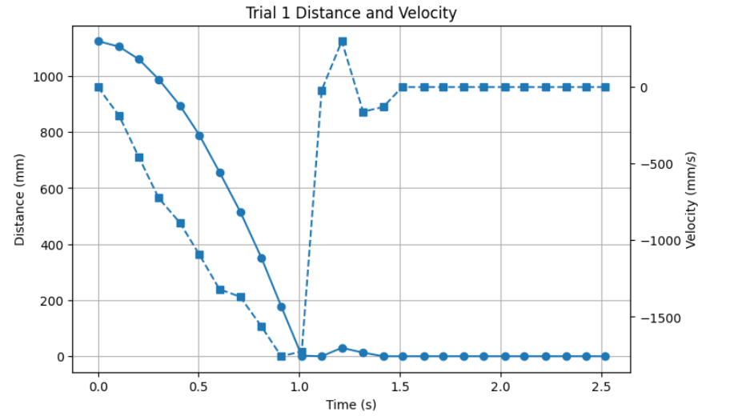
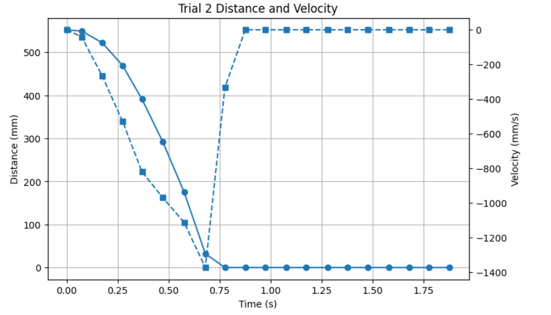
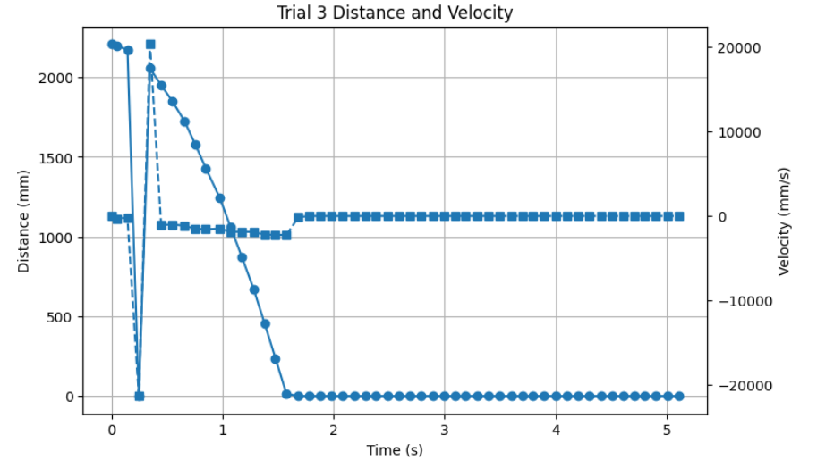
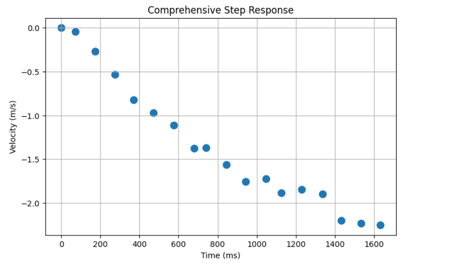
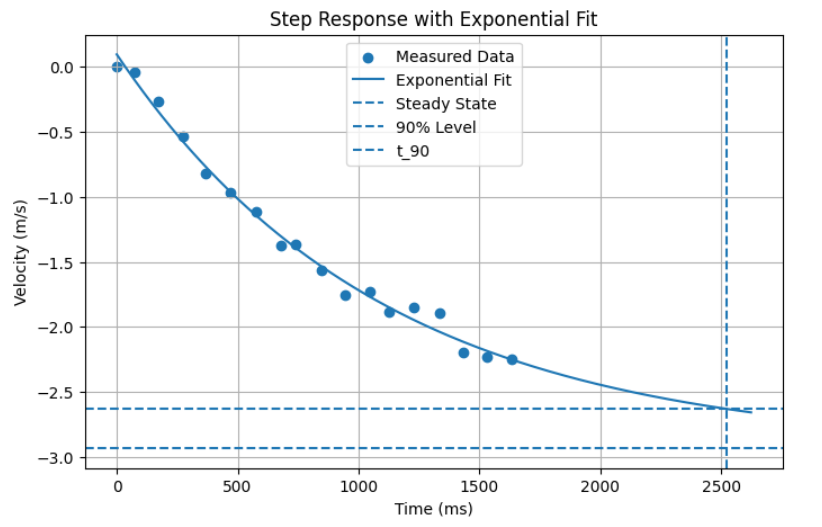
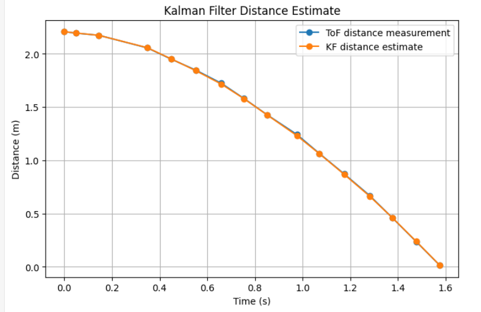
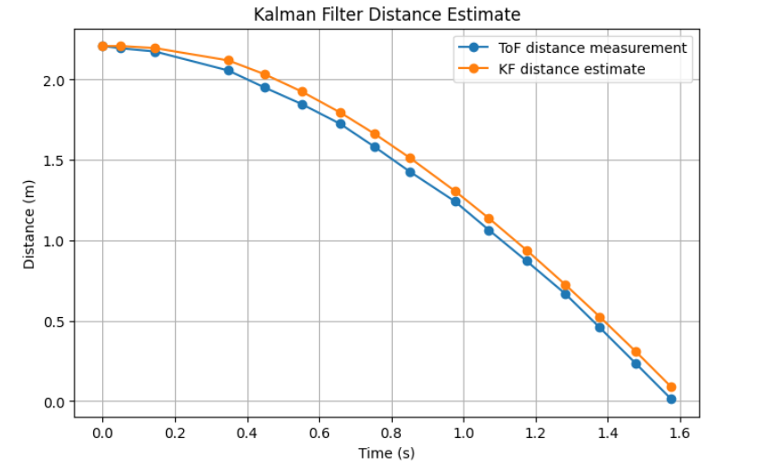
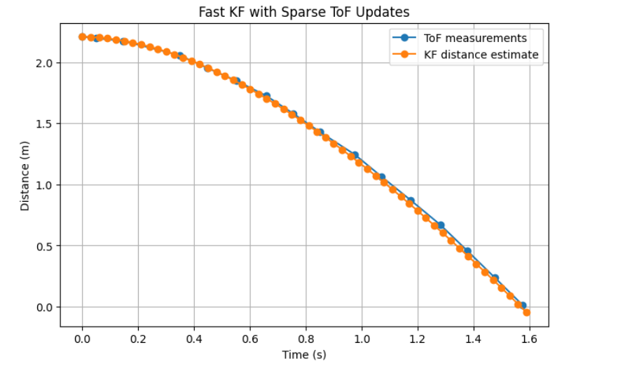
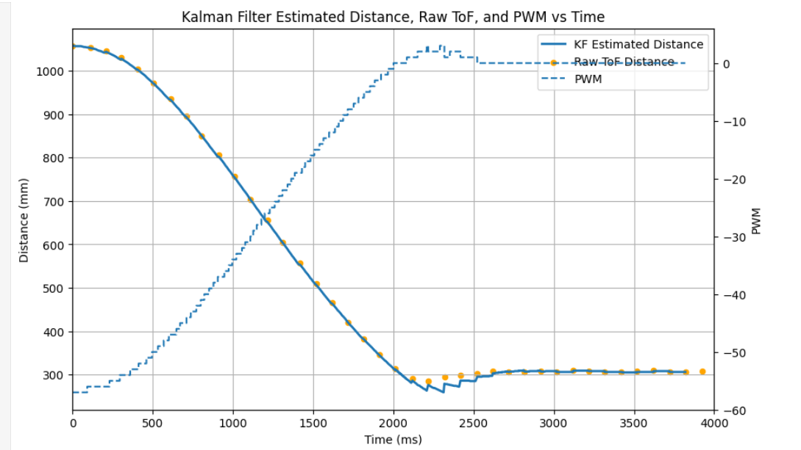

ECE 4160 – Fast Robots
The purpose of this lab was to improve my distance control by using a Kalman Filter to estimate the robot’s distance and velocity between sparse ToF readings. Rather than relying on raw sensor measurements alone or using linear extrapolation when no measurement was available, I used a model-based estimator to predict the robot’s motion every loop and then correct that prediction whenever a new ToF measurement arrived.
Before implementing the Kalman Filter, I first estimated the robot's first-order dynamics from step response data. I ran the robot at a fixed input of 150 pwm straight into a wall from 3 different starting distances. I then logged the ToF distance over time, computed velocity from the distance data, and then combined the valid parts (in the 3 trial for example I get a bad reading which throws the graph off at that part) of the trials into one approximate step response.



I then fit an exponential curve to that combined response in python in order to estimate the steady state velocity and the 90% response time. Using these values, I estimated the model parameters d and m for the simplified system model.


This produced these values:
a = 3.030380261362116
b = -0.0009128265719549893
c = -2.9341854629324366
v0 = 0.09619479842967937
v_ss = -2.9341854629324366
v_90 = -2.631147436796225
t_90 = 2522.478161500741 ms
t_90 = 2.522478161500741 s
Which allowed me to solve for m and d:
import numpy as np
v_ss = -2.9341854629324366
t_90 = 2.522478161500741
u_ss = 150 / 255
d = u_ss / v_ss
m = (-d * t_90) / np.log(1 - 0.9)
print("d =", d)
print("m =", m)
I kept the sign convention from my measured velocity data, so my steady state velocity was negative because the measured quantity was distance to the wall, which decreases as the robot moves forward. These estimated values were then used in the state space model for the Kalman Filter.
I modeled the robot using a two-state system, where the state vector contained the distance to the wall and the forward velocity. The ToF sensor directly measured only the distance, so the Kalman Filter estimated both states and fused the measurements with the system model. Before testing the filter on the live robot, I first tested it in python using logged data before moving it onto the robot.
A = np.array([
[0, 1],
[0, -d/m]
])
B = np.array([
[0],
[1/m]
])
C = np.array([[1, 0]])
I then discretized the model and selected covariance matrices for process noise and sensor noise. I experimented with different values for these matrices in order to tune how much the filter trusted the model versus the measurements.
dt = 0.015
Ad = np.eye(2) + dt * A
Bd = dt * B
sigma_pos_process = [confidence in model pos/dis]
sigma_vel_process = [confidence in model vel]
sigma_sensor = [confidence in sensor pos/dis]
Q = np.array([
[sigma_pos_process**2, 0],
[0, sigma_vel_process**2]
])
R = np.array([[sigma_sensor**2]])
here with parameters that give a high confidence to the model and to the sensor data we see that the model almost perfectly tracks my data.
sigma_pos_process = 0.01
sigma_vel_process = 0.01
sigma_sensor = 0.01

Now when we significanlty decrease the confidence in our sensor data and increase it in the model, the filter starts to diverge slightly but remain close to the data.
sigma_pos_process = 0.0001
sigma_vel_process = 0.0001
sigma_sensor = 5

I then increased the speed of the filter to be faster than the data I recieved since this will be necessary for when I actually shifted over to implementing this on the robot.

Due to already having set up PI control in lab 5 and orientation control in lab 6, I was able to reuse much of the same overall structure for this lab. I kept the same main control loop structure, but replaced the old distance extrapolation logic with a Kalman Filter estimate. I also added a new command to toggle Kalman Filter use.
The main idea was that once the Kalman Filter had been initialized from one real sensor reading, it would run every loop. If a new ToF reading was available, the filter would run both the predict and update (to update the filter with the new data) steps. If no new reading was available, it would only run the predict step. In both cases, the value returned to the controller was the Kalman Filter's estimated distance rather than the raw distance or a linear extrapolation.
if (run_car_forward) {
int dist = -1;
if (use_kalman_filter) {
time_arr_imu[pid_counter] = millis();
if (!kf_initialized) {
if (distance_sensor_2.checkForDataReady()) {
int init_dist = distance_sensor_2.getDistance();
distance_sensor_2.clearInterrupt();
reset_kf_from_measurement(init_dist);
distance_sensor2[real_val_counter] = init_dist;
time_arr_imu_real[real_val_counter] = time_arr_imu[pid_counter];
real_val_counter += 1;
} else {
analogWrite(motorL1, 0);
analogWrite(motorL2, 0);
analogWrite(motorR1, 0);
analogWrite(motorR2, 0);
continue;
}
}
dist = get_kf_distance_mm();
distance_sensor2_we[pid_counter] = dist;
kf_vel_log[pid_counter] = xhat(1,0);
} else {
time_arr_imu[pid_counter] = millis();
if (distance_sensor_2.checkForDataReady()) {
dist = distance_sensor_2.getDistance();
distance_sensor2_we[pid_counter] = dist;
distance_sensor2[real_val_counter] = dist;
time_arr_imu_real[real_val_counter] = millis();
distance_sensor_2.clearInterrupt();
real_val_counter += 1;
}
if (dist == -1) {
if (real_val_counter < 2) {
dist = 200;
distance_sensor2_we[pid_counter] = dist;
} else {
float slope = (distance_sensor2[real_val_counter-1] - distance_sensor2[real_val_counter-2]) /
float(time_arr_imu_real[real_val_counter-1] - time_arr_imu_real[real_val_counter-2]);
int time_elapsed = time_arr_imu[pid_counter] - time_arr_imu_real[real_val_counter-1];
distance_sensor2_we[pid_counter] = distance_sensor2[real_val_counter-1] + time_elapsed * slope;
dist = distance_sensor2_we[pid_counter];
}
}
}
int desired_dist = 305;
int pwm_val = pi_value(dist, desired_dist);
pwm_val = constrain(pwm_val, -150, 150);
last_pwm_cmd = pwm_val;
pwm_data[pid_counter] = pwm_val;
pid_counter += 1;
}
I also added helper functions to initialize the filter from the first valid ToF measurement, run the Kalman Filter step, and return the current estimated distance in millimeters so that it could be used directly in my existing PI controller.
void reset_kf_from_measurement(int initial_dist_mm) {
xhat = { initial_dist_mm / 1000.0f,
0.0f };
Sigma = { 0.02f * 0.02f, 0.0f,
0.0f, 0.5f * 0.5f };
last_kf_time_ms = millis();
last_pwm_cmd = 0;
kf_initialized = true;
}
int get_kf_distance_mm() {
unsigned long now_ms = millis();
float dt_s = (now_ms - last_kf_time_ms) / 1000.0f;
if (dt_s <= 0.0f) {
dt_s = 0.015f;
}
last_kf_time_ms = now_ms;
bool has_meas = false;
int raw_dist_mm = -1;
if (distance_sensor_2.checkForDataReady()) {
raw_dist_mm = distance_sensor_2.getDistance();
distance_sensor_2.clearInterrupt();
has_meas = true;
distance_sensor2[real_val_counter] = raw_dist_mm;
time_arr_imu_real[real_val_counter] = now_ms;
real_val_counter += 1;
}
float u_norm = last_pwm_cmd / 255.0f;
if (has_meas) {
kf_step(dt_s, u_norm, true, raw_dist_mm / 1000.0f);
} else {
kf_step(dt_s, u_norm, false, 0.0f);
}
return (int)(xhat(0,0) * 1000.0f);
}
This approach allowed me to keep the same general structure from the previous labs, while replacing the distance extrapolation with a KF model based estimate. The controller still took in a desired distance and a current distance, but now the current distance came from the Kalman Filter rather than directly from the sensor.
I then collected the values in python in a similar way to in previous labs.
The ToF sensor updated much more slowly than the control loop, so running the filter only when the sensor updated would not significantly improve the behavior of the robot. To make the Kalman Filter more useful, I ran the filter at the same speed as my PI loop. At each loop iteration, the filter first predicted the next state using the system model and the previous control input. If a new ToF measurement was available, the filter then corrected the KF prediction using the measurement update step and then used the predicted value. If no measurement was available, the KF's predicted state was used directly.
This allowed the filter to effectively fill in the gaps between sensor updates with a model-based estimate rather than using a simple linear extrapolation. To make this work correctly, I had to carefully keep all units consistent in meters, seconds, and normalized input. I was also able to test the model by setting sensor noise to a very large value so that the filter would almost completely ignore the sensor and reveal the motion predicted purely by the model. This helped verify that the model itself behaved reasonably before relying on sensor fusion.

Increasing the sensor/measurement noise caused the filter to trust the model more and produce a smoother estimate, while increasing the process noise caused the filter to trust the measurements more closely. With reasonable tuning, the Kalman Filter provided a smoother and more useful estimate for control than using the raw ToF sensor alone or relying on linear extrapolation.